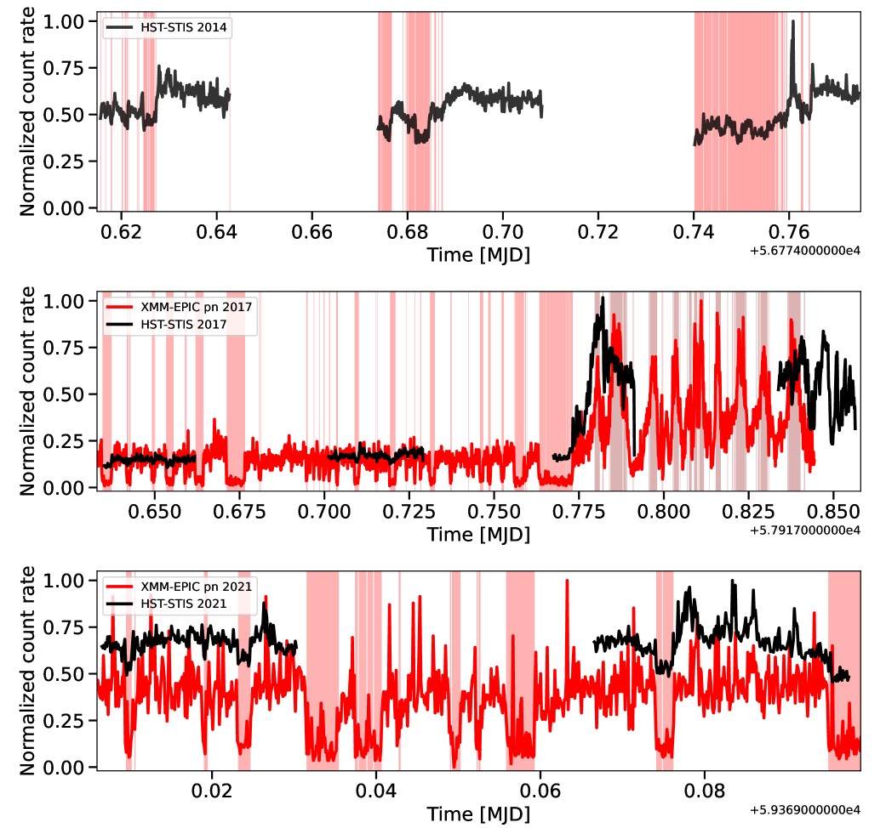
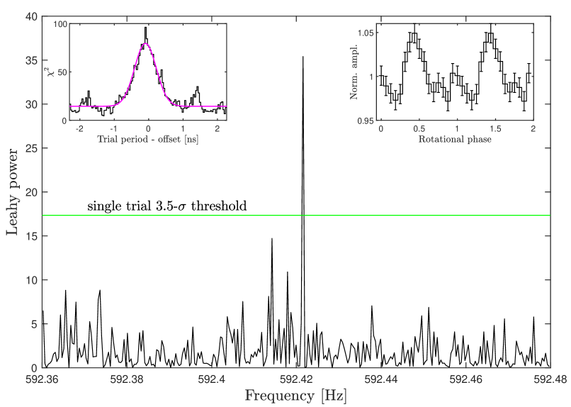
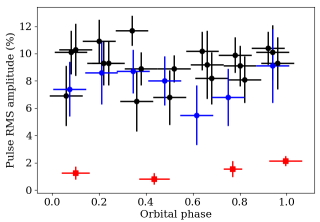
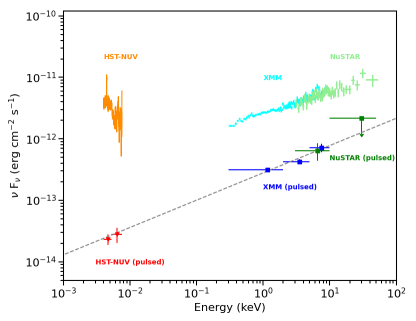

e-mail: arianna.miraval@inaf.it 22institutetext: INAF, Istituto di Astrofisica e Planetologia Spaziali, Via Fosso del Cavaliere 100, 00133 Roma, Italy 33institutetext: Sapienza Università di Roma, Piazzale Aldo Moro 5, 00185 Roma, Italy 44institutetext: Institute of Space Sciences (ICE, CSIC), Campus UAB, Carrer de Can Magrans s/n, 08193 Barcelona, Spain 55institutetext: Institut d’Estudis Espacials de Catalunya (IEEC), Carrer Gran Capità 2–4, 08034 Barcelona, Spain 66institutetext: INAF, Osservatorio Astronomico di Brera, Via E. Bianchi 46, 23807 Merate, LC, Italy 77institutetext: Tor Vergata Università di Roma, Via della Ricerca Scientifica 1, 00133 Rome, Italy 88institutetext: Center for Astro, Particle and Planetary Physics, New York University Abu Dhabi, PO Box 129188, Abu Dhabi, UAE
تغيّر سعة النبضات في الأشعة فوق البنفسجية والأشعة السينية في النجم النابض الملي ثانية الانتقالي PSR J1023+0038
النجم النابض الملي ثانية الانتقالي PSR J1023+0038 هو أول نجم نابض ملي ثانية يُكتشف أنه يصدر نبضات في النطاقين فوق البنفسجي والبصري. نعرض هنا نتائج تحليل التوقيت المحلّل طورياً في النطاقين فوق البنفسجي والأشعة السينية لرصود أُجريت بواسطة تلسكوب هابل الفضائي، وXMM-Newton، والساتل NuSTAR بين 2014 و2021. تُرصد النبضات فوق البنفسجية في نمط اللمعان العالي وتختفي خلال النمطين المنخفض والمتوهج، على نحو مشابه لما يُرصد في نطاق الأشعة السينية. في النمط العالي، نجد تغيراً في سعتي النبضات فوق البنفسجية ونبضات الأشعة السينية. تتراوح السعة النبضية بجذر متوسط المربعات في النطاق فوق البنفسجي من 2.1% نزولاً إلى 0.7%، في حين تتذبذب في المجال في نطاق الأشعة السينية. ولا يرتبط هذا التغيّر بالطور المداري، كما لوحظ في النطاق البصري. وعلى الرغم من الإحصاءات المنخفضة نسبياً، لدينا دليل هامشي على أن تغيرات سعة النبض لا تحدث في الوقت نفسه في النطاقين فوق البنفسجي والأشعة السينية. وعندما تنخفض السعة النبضية فوق البنفسجية إلى ما دون عتبة الكشف، لا يُرصد تغير معنوي في السعة النبضية للأشعة السينية. ويمكن أن تكون هذه التذبذبات في سعة النبض ناجمة عن تغيرات عشوائية صغيرة في معدل تراكم الكتلة تؤدي إلى تغير في حجم منطقة الصدمة داخل الثنائية. وأخيراً، نجد أن التوزيع الطيفي للفيض النبضي من نطاق الأشعة السينية إلى النطاق فوق البنفسجي يلائمه جيداً قانون قوة من الشكل . ويدعم ذلك فرضية وجود آلية فيزيائية مشتركة تكمن وراء الانبعاثات النبضية في الأشعة السينية وفوق البنفسجية والبصرية في PSR J1023+0038.
Key Words.:
النجوم النابضة: الفردية: PSR J1023+0038 – الأشعة السينية: الثنائيات – النجوم: النيوترونية1 مقدمة
النجوم النابضة الملي ثانية الانتقالية (tMSPs) هي نجوم نيوترونية (NSs) سريعة الدوران جداً وضعيفة المغنطة (108–109 G) تقع في أنظمة ثنائية. وتكتسب دورانات سريعة تصل إلى عدة مئات من المرات في الثانية خلال طور يمتد 108–109 سنة ويهيمن عليه تراكم المادة القرصي من نجم مرافق منخفض الكتلة ( 1 M⊙) (Alpar et al. 1982; Radhakrishnan and Srinivasan 1982). وعندما يتوقف انتقال الكتلة، تلمع هذه المصادر كنجوم نابضة راديوية و/أو في أشعة غاما مدفوعة بالدوران، حيث ينشأ الانبعاث النبضي من تسارع الجسيمات في الغلاف المغناطيسي. وتصل tMSPs إلى هذا النظام عندما تزيح ريح النجم النابض الغاز المتدفق من النجم المرافق عبر فيضان فص روش. وعندما يزداد تراكم الكتلة ويكون المجال المغناطيسي للنجم النيوتروني قوياً بما يكفي لتوجيه المادة الداخلة نحو قطبيه المغناطيسيين، يمكن رصد النجم النيوتروني كنجم نابض ملي ثانية مدفوع بالتراكم (MSP). وتُعرف حالياً ثلاثة tMSPs مؤكدة (Papitto and de Martino 2020): IGR J18245–2452 (Papitto et al. 2013), وPSR J1023+0038 (Archibald et al. 2009, 2013), وXSS J12270–4859 (Bassa et al. 2014; de Martino et al. 2014).
خلال الحالة المدفوعة بالتراكم، يُظهر PSR J1023+0038 (ويُشار إليه فيما يلي بـ J1023) وXSS J12270–4859 لمعاناً في الأشعة السينية ( erg s-1، 0.3–79 keV) أدنى من القيمة التي تُرصد عادة للنجوم النابضة الملي ثانية المتراكمة في طور الانفجار ( erg s-1؛ Patruno and Watts 2021; Di Salvo et al. 2019). وخلال هذه الحالة الخاصة من tMSPs، التي نسميها حالة القرص دون اللامع، لا يزال من غير الواضح ما إذا كان الانبعاث النبضي مدفوعاً بالتراكم أم بدوران ثنائي القطب المغناطيسي للنجم النيوتروني (Papitto et al. 2019; Veledina et al. 2019; Campana et al. 2019; Miraval Zanon et al. 2020). تتناوب tMSPs بين فترات يكون فيها النظام أشد سطوعاً في النطاقات البصرية والأشعة السينية وأشعة ، وفترات سكون يكون النجم النابض الراديوي خلالها نشطاً. ويمكن أن يحدث تناوب هذه الحالات على مقاييس زمنية قصيرة جداً من أسابيع إلى أشهر استجابة لتغيرات في معدل تراكم الكتلة. وتمثل هذه الظواهر دليلاً على وجود صلة مباشرة بين ثنائيات الأشعة السينية منخفضة الكتلة ذات النجوم النيوترونية والنجوم النابضة الراديوية الملي ثانية الثنائية.
يُعد J1023 النجم النابض الملي ثانية الانتقالي الوحيد الموجود حالياً في حالة القرص دون اللامع، وهو أيضاً أفضل المصادر دراسةً بسبب قربه ( pc؛ Deller et al. 2012) وسطوعه ( mag؛ Coti Zelati et al. 2014). وخلال حالة القرص دون اللامع، يتذبذب J1023 بسرعة كبيرة بين ثلاثة أنماط لمعان مختلفة، تسمى المنخفض والعالي والمتوهج (Bogdanov et al. 2015; Campana and Di Salvo 2018; Papitto and de Martino 2020). ويظهر الانتقال بين الأنماط العالي والمنخفض والمتوهج بوضوح في نطاقي الأشعة السينية وفوق البنفسجية ويحدث في الوقت نفسه (Coti Zelati et al. 2018; Papitto et al. 2019; Jaodand et al. 2021). وفي النطاقين البصري والقريب من تحت الأحمر، لم يُكشف قط انتقال النمط المنخفض-العالي، لكن نشاط التوهج ظاهر بوضوح وقد يكون مرتبطاً بانبعاث نفاثات أو تدفقات خارجية موازاة (Shahbaz et al. 2018; Papitto et al. 2019; Baglio et al. 2019). ويرتبط انتقال النمط المنخفض-العالي في الأشعة السينية وفوق البنفسجية ارتباطاً عكسياً بالانبعاث الراديوي (Bogdanov et al. 2018). وترتبط الأنماط المنخفضة في الأشعة السينية بزيادة في النشاط الراديوي، ويُحتمل أن ذلك يرجع إلى نوبات من معدلات تراكم منخفضة المستوى وإلى قذف سريع للبلازما بواسطة نجم نابض نشط مدفوع بالدوران (Bogdanov et al. 2018).
خلال نمط اللمعان العالي، يُظهر J1023 نبضات في الأشعة السينية وفوق البنفسجية والبصرية عند فترة دوران النجم النيوتروني البالغة 1.69 ms، مع كسر نبضي بجذر متوسط المربعات (rms) قدره و و، على الترتيب (Ambrosino et al. 2017; Papitto et al. 2019; Jaodand et al. 2021). ويتسم النمط المنخفض بغياب نبضات الأشعة السينية وفوق البنفسجية والبصرية. وتبلغ الحدود العليا لقيمة rms في نطاقي الأشعة السينية والبصري 2.4% و 0.034% (Archibald et al. 2015; Jaodand et al. 2016; Papitto et al. 2019)، على الترتيب. وخلال نشاط التوهج، يُرصد انخفاض في سعة النبض البصري (0.16(2)%)، ولا تُكشف نبضات الأشعة السينية (الكسر النبضي rms 1.3%؛ Papitto et al. 2019).
ندرس في هذه الورقة تغير سعة النبضات فوق البنفسجية ونبضات الأشعة السينية في tMSP J1023، مستعينين برصود أشعة سينية متزامنة أو شبه متزامنة. وباستخدام رصود تلسكوب هابل الفضائي (HST)، وXMM-Newton، وNuSTAR المنفذة خلال حالة القرص دون اللامع، نجري تحليلاً توقيتياً محللاً طورياً في النطاقين فوق البنفسجي والأشعة السينية. وتستكشف هذه الدراسة متعددة الأطوال الموجية خصائص النبضات فوق البنفسجية ونبضات الأشعة السينية في J1023 على امتداد المدار وفي أنماط الشدة المختلفة. ونبحث في وجود علاقة بين نبضات الأشعة السينية والنبضات فوق البنفسجية، مؤكدين أصلها الفيزيائي المشترك. يُخصَّص القسم 2 لوصف مجموعة البيانات واختزالها. وفي القسم 3 نعرض تحليلاً توقيتياً في الأشعة السينية وفوق البنفسجية، فضلاً عن الحدود العليا لسعة rms للنبضات فوق البنفسجية. ويُخصَّص القسم 4 لتوزيع الطاقة الطيفي (SED) للانبعاثات النبضية في النطاقين فوق البنفسجي والأشعة السينية. وفي القسم 5 نناقش النتائج وتبعات تغير سعة النبضات فوق البنفسجية ونبضات الأشعة السينية.
2 الرصود وتحليل البيانات
نصف في هذا القسم تحليل البيانات لمجموعات البيانات المختلفة التي جُمعت بصورة متزامنة أو شبه متزامنة في نطاقي الأشعة السينية وفوق البنفسجية على امتداد فترة زمنية قدرها 8 سنة. ويلخص الجدول 1 الرصود المعروضة والمحللة في هذه الورقة.
2.1 الرصود فوق البنفسجية
رصد مطياف التصوير في تلسكوب الفضاء (STIS) على متن HST المصدر J1023 ثلاث مرات بين 2014 و2021. وتُعرض تفاصيل الرصود الطيفية التسعة التي جُمعت خلال الزيارات الثلاث لـ HST في الجدول 1. أُجريت هذه الرصود في نمط TIME-TAG باستخدام كاشف NUV-MAMA بدقة زمنية قدرها 125 s؛ وجُمعت باستعمال محزوز G230L المجهز بشق قدره 52 0.2 arcsec وبدقة طيفية قدرها 500 عبر المجال الاسمي (الرتبة الأولى). استخدمنا حزمة stisphotons11 1 https://github.com/Alymantara/stis_photons لتصحيح موضع قنوات الشق وإسناد الأطوال الموجية إلى كل زمن وصول (ToA). واخترنا أزمنة الوصول التابعة للقنوات 993–1005 من الشق والواقعة في مجال الأطوال الموجية 165–310 nm لعزل إشارة المصدر، وتقليل مساهمة الخلفية، وتجنب المساهمة الضجيجية الناجمة عن الاستجابة الضعيفة لمحزوز G230L عند الأطوال الموجية الطرفية. ثم أحلنا أزمنة الوصول إلى مركز كتلة النظام الشمسي باستخدام مهمة ODELAYTIME (روتين فرعي متاح في حزمة برمجيات IRAF/STDAS)، مشغلين تقويم JPL DE200 مع موضع النجم النابض الذي أورده Deller et al. (2012). في الشكل 1 نعرض منحنيات الضوء فوق البنفسجية المعيّرة التي رُصدت خلال الزيارات الثلاث لـ HST، مجمعة في حاويات زمنية قدرها 10 s. ويُطبَّع معدل العد لكل أداة وسنة رصد عند معدل العد الأقصى، وتُحدَّد فواصل الأنماط المنخفض والعالي والمتوهج. وبالنسبة إلى الرصود المنفذة في 2017 و2021، أُنجز اختيار فواصل الأنماط بفضل رصود الأشعة السينية المتزامنة من XMM-Newton (انظر القسم 2.2). أما مجموعة بيانات 2014 فقد بنينا توزيع معدلات العد فوق البنفسجية بتعريف المجال 0–76.7 counts s-1 نمطاً منخفضاً، والمجال ذي معدلات العد 88.1 counts s-1 نمطاً عالياً، وذلك بسبب غياب رصود أشعة سينية متزامنة تماماً. إن اختيار الأنماط في رصود 2014 فوق البنفسجية أقل دقة من نظيره في الرصود المنفذة في 2017 و2021 (انظر الشكل 1)، لأن الانتقالات بين النمطين العالي والمنخفض (وبالعكس) في النطاق فوق البنفسجي ليست واضحة كما هي في الأشعة السينية.

2.2 رصود الأشعة السينية
رصد XMM-Newton المصدر J1023 في 2021 يونيو 3–4 (Obs ID. 0864010101) باستخدام EPIC-pn في نمط التوقيت السريع وكاشفي MOS في نمط الإطار الكامل (انظر الجدول 1). عُولجت البيانات وحُللت باستعمال نظام التحليل العلمي (SAS؛ الإصدار 19.1). وتبلغ التعرضات الفعالة الصافية بعد غربلة نوبات توهج الخلفية العالية 58.7 ks لـ EPIC-pn، و58.1 ks لـ EPIC-MOS1، و53.5 ks لـ EPIC-MOS2. أُحيلت أزمنة وصول الفوتونات إلى إطار مرجع مركز كتلة النظام الشمسي باستخدام تقويم JPL DE200 حفاظاً على الاتساق مع رصود HST. واتُّبعت إجراءات مماثلة لتلك الموصوفة في Coti Zelati et al. (2018) للتحليل اللاحق: استُخرجت فوتونات المصدر من شريط بعرض 10 بكسلات متمركز على ألمع عمود بكسلي لكاشف pn، ومن دائرة نصف قطرها 36 arcsec متمركزة على موضع المصدر لكل كاشف MOS. وقُدّر مستوى الخلفية من شريط بعرض 3 بكسلات بعيد عن موضع المصدر لكاشف pn، ومن دائرة نصف قطرها 36 arcsec على الجهاز مقترن الشحنة (CCD) نفسه للمصدر في كل كاشف MOS. واختيرت الفواصل الزمنية المرتبطة بكل نمط من أنماط الأشعة السينية عبر استخراج منحنيات الضوء المجمعة بعد طرح الخلفية من كواشف EPIC الثلاثة (خلال مدة التغطية المتزامنة) وتطبيق عتبات معدل العد نفسها التي استخدمها Coti Zelati et al. (2018). جُمّعت منحنيات الضوء لكل كاميرا EPIC عند 10 s. ويُعرَّف النمط العالي عندما يكون المجال 4–11 counts s-1، والنمط المنخفض عندما ينخفض معدل العد دون 2.1 counts s-1، والنمط المتوهج عندما يتجاوز معدل العد 15 counts s-1 (انظر أيضاً Archibald et al. 2015; Bogdanov et al. 2015). وأتاح لنا ذلك عزل ملف أحداث المصدر EPIC-pn المرتبط بالنمط العالي لأغراض التحليل التوقيتي. وطُبقت أيضاً إجراءات مماثلة على مجموعات البيانات التي جُمعت في يونيو 2014 ويونيو 2017 (انظر الجدول 1). وبالنسبة إلى مجموعات بيانات 2021، استُخرجت الأطياف بعد طرح الخلفية للانبعاثين المتوسط زمنياً وانبعاث النمط العالي، ومعها ملفات المساعدة والاستجابة المرتبطة، لكلا كاشفي EPIC-MOS باستخدام الوصفات القياسية (لم تُدرج بيانات EPIC-pn في النمذجة الطيفية بسبب مشكلات المعايرة المعروفة عند الطاقات المنخفضة في نمط التوقيت السريع).
رصد NuSTAR المصدر J1023 لمدة منقضية قدرها 48.6 ks وبتعرض صاف قدره 22 ks (Obs ID. 30601005002)، متداخلاً تقريباً بالكامل مع رصد XMM-Newton. عُولجت البيانات وحُللت باستخدام NuSTARDAS v1.9.2. وأُحيلت أزمنة وصول الفوتونات التي جمعها موديولا المستوى البؤري (FPMA وFPMB) إلى مركز الكتلة بالطريقة نفسها كما في بيانات XMM-Newton. واستُخدمت دائرة نصف قطرها 50 arcsec (متمركزة على المصدر) ودائرة نصف قطرها 100 arcsec (بعيدة عن المصدر وعلى CCD نفسه) لجمع فوتونات المصدر والخلفية، على الترتيب. ويُكشف J1023 حتى طاقات 50 keV في كلا الموديولين. واستُخدمت الفواصل الزمنية المرتبطة بنمط الأشعة السينية العالي والمستخلصة من تحليل بيانات XMM-Newton لاستخراج ملفات أحداث النمط العالي لكلا الموديولين. ثم جُمعت ملفات أحداث المصدر FPMA وFPMB المرتبطة بالنمط العالي لزيادة إحصاءات العد في التحليل التوقيتي. واستُخرجت أطياف مطروح منها الخلفية لمجموعة البيانات الكاملة وكذلك للنمط العالي.
نُمذجت أطياف XMM-Newton/EPIC-MOS وNuSTAR/FPM معاً عبر مجال الطاقة 0.3–50 keV باستخدام نموذج قانون قوة ممتص ضمن xspec22 2 أُدرج أيضاً عامل إعادة تطبيع لمراعاة لايقينيات المعايرة البينية بين الأدوات المختلفة.. وأفضل معاملات الملاءمة للانبعاث المتوسط هي كثافة عمود امتصاص قدرها cm-2 ومؤشر فوتوني قدره ، مما يعطي لمعاناً غير ممتص قدره erg s-1 عبر مجال الطاقة 0.3–50 keV ( لـ 173 درجات حرية). كما نُمذجت الأطياف المرتبطة بنمط الأشعة السينية العالي لاشتقاق SED للانبعاث النبضي (انظر القسم 4). وفي الملاءمة، ثُبِّتت كثافة العمود عند القيمة المتوسطة. ونستنتج و erg s-1 (0.3–50 keV؛ لـ 199 درجات حرية).
| Telescope | Detector | Mode | Filter/Band | Start time | Net exposure | Orbit |
| [MJD(TDB)] | [s] | |||||
| HST | STIS/NUV-MAMA | Fast timing spectroscopy | G230L | 59369.00660 | 2060.0 | 1 |
| 59369.06656 | 2689.9 | 2 | ||||
| XMM-Newton | EPIC pn | Fast timing | 0.3–10 keV | 59368.86453 | 58659.1 | – |
| XMM-Newton | EPIC MOS1 | Full frame | 0.3–10 keV | 59368.88195 | 58066.2 | – |
| XMM-Newton | EPIC MOS2 | Full frame | 0.3–10 keV | 59368.93910 | 53466.1 | – |
| NuSTAR | FPMA | Fast timing | 3–79 keV | 59368.86938 | 22303.5 | – |
| NuSTAR | FPMB | Fast timing | 3–79 keV | 59368.86938 | 22148.6 | – |
| HST | STIS/NUV-MAMA | Fast timing spectroscopy | G230L | 57917.63509 | 2317.0 | 1 |
| 57917.70131 | 2402.5 | 2 | ||||
| 57917.76754 | 2058.1 | 3 | ||||
| 57917.83376 | 1960.8 | 4 | ||||
| XMM-Newton | EPIC pn | Fast timing | 0.3–10 keV | 57917.60440 | 20737.9 | – |
| HST | STIS/NUV-MAMA | Fast timing spectroscopy | G230L | 56774.61561 | 2348.0 | 1 |
| 56774.67383 | 2978.9 | 2 | ||||
| 56774.74021 | 2978.9 | 3 | ||||
| XMM-Newton | EPIC pn | Fast timing | 0.3–10 keV | 56818.18006 | 116712.7 | – |
3 التحليل التوقيتي
لإجراء تحليل توقيتي عالي الدقة، يجب أن نأخذ حركة النجم النابض حول مركز كتلة الثنائية في الحسبان. ونتيجة الحركة المدارية هي ما يسمى بتأخير Rømer، الذي يسبب تقدماً أو تأخراً دورياً في أزمنة الوصول، اعتماداً على موضع النجم النابض على طول المدار. وفي الأنظمة الثنائية ذات المدار شبه الدائري مثل J1023 (؛ Archibald et al. 2009)، يمكن تبسيط معادلة تأخير Rømer إلى (Blandford and Teukolsky 1976)، حيث إن هو نصف المحور الأكبر الإسقاطي لمدار النجم النابض و هو الشذوذ المتوسط. ويمكن أن يُكتب الشذوذ المتوسط لمدار دائري ببساطة على الصورة (-)، حيث إن هي السرعة الزاوية و هو عصر المرور بالعقدة الصاعدة. وكما أورد Jaodand et al. (2016) وBurtovoi et al. (2020)، يُظهر J1023 تغيراً كبيراً في الطور المداري خلال كل من حالة القرص دون اللامع وحالة النجم النابض الراديوي. ويؤدي هذا التغير غير القابل للتنبؤ إلى لايقين كبير في ، مما يعرّض البحث عن النبض للخطر. ولتجاوز هذا الأثر، أجرينا بحثاً في قيمة لكل رصد من رصود XMM-Newton عبر تغيير هذا المعامل في مجال عرضه s حول القيمة المستقرأة من Jaodand et al. (2016). واستخدمنا حجم خطوة قدره 0.125 s لـ وطوينا السلسلة الزمنية على = 16 حاوية طورية. وحُددت أفضل القيم النهائية لـ بملاءمة قمة توزيع بدالة غاوسية. وتُعرض أفضل قيم وفترة الدوران لكل رصد أشعة سينية في الجدول 2. ولتدقيق قياس فترة الدوران، استخدمنا طريقة ملاءمة الطور أو بحث الطي الحقبي (EFS; Leahy et al. 1983; Leahy 1987) مع 16 حاوية طورية عندما كانت الإشارة فوق البنفسجية أضعف من أن تُكشف. وتتألف تقنية EFS من البحث عن دوريات في سلسلة زمنية عبر طي البيانات على مجال من الترددات التجريبية حول تردد دوران النجم النيوتروني المرشح وتحديد لكل سلسلة زمنية مطوية.
صححنا أزمنة وصول NuSTAR من أجل الحركة المدارية باستخدام المقاسة من رصد 2021 المتزامن لـ XMM-Newton. وأجرينا EFS جديداً لبيانات NuSTAR حول فترة الدوران المتوقعة البالغة 1.6879874446 ms بسبب انجراف الساعة الداخلية لـ NuSTAR (Madsen et al. 2015). ويتوافق منحنى النبض ذي أكبر نسبة إشارة إلى ضجيج مع الفترة ms، وهي تختلف بمقدار s عن .
3.1 التحليل التوقيتي فوق البنفسجي
توقعنا أن تكون قيمة في النطاق فوق البنفسجي قريبة جداً من تلك المشتقة من تحليل بيانات الأشعة السينية. وأجرينا بحثاً جديداً في النطاق فوق البنفسجي بسبب لايقين كاشف NUV-MAMA في التوقيت المطلق لبيانات HST (1 s؛ مراسلة خاصة مع مكتب مساعدة HST). وبحثنا عن أفضل قيمة لـ ضمن مجال s حول أفضل قيمة في الأشعة السينية وبحجم خطوة 0.125 s. أُجري بحث بدمج مدارات HST المختلفة من كل من عصور الرصد الثلاثة في ثلاث كتل مقابلة لزيادة نسبة الإشارة إلى الضجيج. ثم كررنا التحليل لكل مدار من مدارات HST. ونجد أن الإشارة النبضية لا تُكشف في كل رصد.
حددنا قيمة في المدار الثاني لـ HST من رصود 2021 وفي جميع المدارات المدمجة لرصود 2017 بعد اختيار فواصل النمط العالي (انظر الشكل 1). حسبنا كثافة القدرة الطيفية لفورييه لرصد 2021 بعد تصحيح أزمنة الوصول بأفضل قيمة = 59368.091163(33) MJD. ونقيس قدرة مطبعة بطريقة Leahy قدرها 35.4 عند تردد 592.42157(20) Hz (الشكل 2). والاحتمال المرتبط بتقلبات الضجيج الأبيض العشوائية هو ، الموافق لكشف عند مستوى 5.6 (احتمال تجربة منفردة). وفي إدخالات الشكل 2 نعرض EFS على اليسار ومنحنى النبض فوق البنفسجي على اليمين. أُجري EFS باستخدام 128 فترات تجريبية عبر أخذ عينات لكل فترة بـ 16 حاوية طورية. وأفضل فترة دوران هي 1.687987321(69) ms، وهي تختلف بمقدار -1.2 s عن . وتبلغ سعة rms للنبضان فوق البنفسجي بعد طرح الخلفية في فواصل النمط العالي (2.130.36)% (انظر الجدول 3). وقُدّر معدل عد الخلفية باختيار الفوتونات في القناتين 200–800 و1200–1800 من الشق للحصول على إحصاءات عالية وتجنب مساهمة المصدر. ثم طبّعنا معدل العد المتوسط إلى العدد الكلي لقنوات الشق.
بعد اختيار فواصل النمط العالي في مجموعة بيانات 2017، دمجنا المدارات الأربعة؛ ونكشف نبضات فوق بنفسجية عند مستوى 3.8، مع أخذ 64 تجربة في EFS في الحسبان. وتُعرض أفضل قيمة وفترة الدوران في الجدول 2. ويبلغ الفرق بين فترة الدوران فوق البنفسجية وفترة الدوران في الأشعة السينية 1.9 s. وتبلغ سعة rms للنبضان فوق البنفسجي بعد طرح الخلفية (1.100.32)%، وهي أدنى من القيمة المقاسة في رصد 2021. وقد حصل Jaodand et al. (2021) على نتائج مشابهة؛ ومن المرجح أن الفروق الطفيفة تعود إلى الاختيار المختلف لأنماط اللمعان العالي. ففي تحليلنا، اختيرت الأنماط العالية في جميع المدارات، بما في ذلك المداران الثالث والرابع، حيث يُرجح أن يهيمن نشاط التوهج. ولم نستبعد إلا الجزء الأخير من المدار الرابع لـ HST لأنه لا يتداخل مع رصد الأشعة السينية. وقد تنشأ التوهجات من آلية غير مرتبطة بانتقال النمط المنخفض-العالي، مثل منطقة خارجية من قرص التراكم. وهذا قد يشير إلى أن J1023 لا يوقف انتقال النمط المنخفض-العالي حتى خلال الفواصل الزمنية لنشاط التوهج؛ لذلك أدرجنا أيضاً المدارين الأخيرين في التحليل. ونجد أن أعلى سعة نبض، ، تقع في المدار الثالث لـ HST على الرغم من وجود التوهجات (انظر الجدول 3 لجميع سعات rms للنبضات فوق البنفسجية). وعند اختيار فواصل النمط المتوهج، يظل منحنى النبض ثنائي القمة مرئياً عند طي السلسلة الزمنية للمدار الثالث لـ HST، لكن الدلالة أقل من 1.5، ويُحتمل أن ذلك بسبب ضعف الإحصاءات. ونتيجة لذلك، لا نستبعد أيضاً وجود نبضات فوق بنفسجية أثناء التوهجات.
في رصود 2014، كانت الإشارة أضعف من أن تتيح تقدير أفضل قيمة لـ . ولهذا السبب، صححنا أزمنة الوصول من أجل الحركة المدارية باستخدام المقاسة من رصود الأشعة السينية المنفذة بعد 21 أيام. ونشرناها إلى زمن الرصود فوق البنفسجية (انظر الجدول 2) ثم بحثنا عن الانبعاث النبضي. وحتى عند دمج الأنماط العالية للمدارات الثلاثة كلها، لا يكون النبضان فوق البنفسجي ذا دلالة، لكن منحنى النبض ثنائي القمة يكون مرئياً.
نجد تغيراً كبيراً في سعة rms فوق البنفسجية على امتداد الفواصل الزمنية للنمط العالي. ففي رصدي 2021، وكل منهما بطول 2 ks، تتغير سعة rms للإشارة. ففي المدار الأول لـ HST، عند أطوار مدارية ضمن المجال 0.62–0.74، لا تُكشف الإشارة. ومن ناحية أخرى، في المدار الثاني لـ HST، ضمن مجال الطور المداري 0.92–1.07، تُكشف الإشارة فوق البنفسجية بسعة rms قدرها (2.130.36)%. وهذه أكبر سعة rms مقاسة في النطاق فوق البنفسجي. ومعدلا العد المتوسطان للمصدر والخلفية متقاربان في المدارين، ولا يُكشف نشاط توهجي في أي من الرصدين. ومجال الطور المداري هو الفرق الوحيد بين الرصدين. ولسوء الحظ، لا تتيح لنا قلة الرصود في النطاق فوق البنفسجي دراسة ارتباط بين سعة النبض والطور المداري. ويُرصد تغير كبير في سعة النبض أيضاً في النطاق البصري. فسعة rms للنبض البصري خلال النمط العالي ليست ثابتة زمنياً، إذ تتراوح من قيم أدنى من 0.2% حتى قيمة قصوى قدرها 1.5-2%، من دون ارتباط واضح بالطور المداري (Papitto et al. 2019).
3.2 الحدود العليا فوق البنفسجية
لا تُكشف النبضات فوق البنفسجية خلال فواصل النمط المنخفض، ولا خلال بعض أنماط اللمعان العالي. ويعرض الجدول 3 الحدود العليا لسعة rms فوق البنفسجية المشتقة من تجميع جميع فترات النمط المنخفض لكل من مجموعات البيانات الثلاث، ومن فواصل النمط العالي التي لا تُكشف فيها الإشارة. وقُدّرت الحدود العليا بحساب كثافة القدرة الطيفية لفورييه لكل رصد وقياس قدرة التوافقي الأول (P1) والثاني (P2) لتردد الدوران. ثم حوّلنا هاتين القدرتين إلى سعات rms عند مستوى ثقة 3 باتباع الإجراء الوارد في Vaughan et al. (1994).
وللتحقق من النتائج، قدرنا أيضاً الحدود العليا من خلال محاكاة أُجريت باستخدام حزمة برمجيات Stingray33 3 https://github.com/StingraySoftware/stingray (Huppenkothen et al. 2019b, a). ولكل مجموعة بيانات، ولدنا 104 منحنيات ضوئية اصطناعية، مع الإبقاء على زمن التكامل ومعدل العد المتوسط نفسيهما كما في رصودنا. وحسبنا كثافة القدرة الطيفية لفورييه لكل منحنى وقسنا قدرة التوافقي الأول (P1) والثاني (P2) لتردد الدوران. ثم بنينا توزيعي P1 وP2 للحصول على القيمتين اللتين تتجاوزان القدرتين المرصودتين بمستوى ثقة عال (3). ثم حوّلنا هاتين القدرتين إلى سعات rms. وتتوافق النتائج مع تلك المتحصل عليها باتباع الإجراء المعروض في Vaughan et al. (1994).
تبلغ الحدود العليا لسعة النبض في فواصل النمط المنخفض 2.7%، و2.0%، و1.8% (انظر الجدول 3). ووُضعت حدود عليا قدرها 2.3% و2.4% لسعة النبض خلال فواصل النمط العالي التي لا تُكشف فيها النبضات فوق البنفسجية. وخلال النمط المتوهج، لا تُكشف النبضات فوق البنفسجية حتى حد علوي قدره 1.6%.
3.3 تغيّر سعة نبضات الأشعة السينية
نظراً إلى التطور العشوائي لسعات rms للنبضات فوق البنفسجية والبصرية، درسنا أيضاً التغير في نطاق الأشعة السينية. واخترنا فواصل النمط العالي في رصود XMM-Newton من 2021 و2017 وقسمنا السلسلة الزمنية إلى فواصل طول كل منها 2.4 ks (انظر الجدول 4). وقسنا سعة rms للنبض في جميع الفواصل بحثاً عن اعتماد محتمل على الطور المداري.
نجد تغيراً في سعة rms للنبض يتراوح من (5.52.2)% إلى (11.71.1)%، من دون أي ارتباط بالطور المداري (انظر الشكل 3). وعلى الرغم من أن هذه الدراسة تغطي نحو أربعة أطوار مدارية، ينبغي توسيعها لتشمل جميع رصود XMM-Newton لزيادة الإحصاءات بسبب التغير الكبير والعشوائي للمصدر.
وأخيراً، قارنا سعات rms للنبضات في الأشعة السينية وفوق البنفسجية عند الطور المداري نفسه تقريباً لرصدي 2017 و2021 (انظر الجدولين 3-4). في رصود 2017، قارنا ثلاثة فواصل للطور المداري (0.04–0.16، و0.37–0.50، و0.73–0.82)، تقابل المدارات الثلاثة الأولى لـ HST. وفي الفاصلين الأولين، تكون الإشارة النبضية فوق البنفسجية خافتة جداً، في حين تكاد سعة rms للنبض في نطاق الأشعة السينية تكون ثابتة عند 7-8%. وفي الفاصل الثالث، الذي تهيمن عليه التوهجات، يُكشف النبض فوق البنفسجي بكسر نبضي rms قدره 1.56(59)%، وتُكشف نبضات الأشعة السينية بالكاد. وفي رصد 2021، تتوافق سعات rms للأشعة السينية في فاصلي الطور 0.62–0.74 و0.92–1.07 ضمن الأخطاء، في حين تكون سعة rms للنبض فوق البنفسجي في الرصد الأول أدنى منها في الثاني. وعلى الرغم من الإحصاءات المنخفضة نسبياً، نلاحظ أن تغيرات السعة النبضية قد لا تحدث في الوقت نفسه عند ترددات مختلفة.
| Obs. ID | Obs. start | Best [MJD] | Best [ms] |
|---|---|---|---|
| XMM-Newton | |||
| 0864010101 | Jun 3, 2021 | 59368.0910979(27) | 1.68798744494(51) |
| 0803620501 | Jun 13, 2017 | 57917.431286(12) | 1.6879874534(51) |
| 0742610101 | Jun 10, 2014 | 56818.1948362(24) | 1.68798744496(24) |
| Hubble Space Telescope | |||
| 16061 | Jun 4, 2021 | 59368.091163(33) | 1.687987321(69) |
| 14934 | Jun 13, 2017 | 57917.431293(79) | 1.687987472(44) |
| 13630 | Apr 27, 2014 | 56774.6136468(24)∗ | – |
∗ القيمة المنشورة من أقرب تقويم أشعة سينية (Obs. ID 0742610101).

| Mode | Year | Orbit | Orbital phase | Amplitude (%) |
|---|---|---|---|---|
| High | 2021 | 1 | 0.62–0.74 | ¡2.3 |
| High | 2021 | 2 | 0.92–1.07 | 2.13(36) |
| Low | 2021 | 1-2 | 0.64–1.12 | ¡2.7 |
| High | 2021 | 1-2 | 0.62–1.07 | 1.41(23) |
| High | 2017 | 1 | 0.04–0.16 | 1.25(47)∗ |
| High | 2017 | 2 | 0.37–0.50 | ¡2.4 |
| High | 2017 | 3 | 0.73–0.82 | 1.56(59) |
| High | 2017 | 1-2-3-4∗∗ | 0.04–1.08 | 1.06(37) |
| Low | 2017 | 1-2-3 | 0.03–0.82 | ¡2.0 |
| Flaring | 2017 | 3 | 0.76–0.81 | ¡1.6 |
| High | 2014 | 1-2-3 | 0.01–0.81 | 0.68(19)∗ |
| Low | 2014 | 1-2-3 | 0.01–0.76 | ¡1.8 |
∗ دلالة الإشارة أدنى من 3.5، لكن مورفولوجيا منحنى النبض مشابهة للشكل المتوقع.
∗∗ في المدار الرابع، لا نأخذ إلا 50% من الرصد، حيث يوجد التداخل مع نطاق الأشعة السينية.
| Start time [MJD] | Orbital phase | Amplitude (%) |
|---|---|---|
| 59368.920088 | 0.18–0.33 | – ∗ |
| 59368.947866 | 0.33–0.47 | – ∗ |
| 59368.975644 | 0.47–0.61 | 4.4 2.2∗ |
| 59369.003421 | 0.61–0.75 | 8.2 1.9 |
| 59369.031199 | 0.75–0.89 | 8.1 1.7 |
| 59369.058977 | 0.89–0.03 | 9.3 1.9 |
| 59369.086755 | 0.03–0.17 | 10.3 1.9 |
| 59369.114533 | 0.17–0.31 | 9.3 1.6 |
| 59369.142310 | 0.31–0.45 | 8.9 1.2 |
| 59369.170088 | 0.45–0.59 | 8.9 1.0 |
| 59369.197866 | 0.59–0.73 | 9.2 2.5 |
| 59369.225644 | 0.73–0.87 | 9.1 1.5 |
| 59369.253421 | 0.87–0.01 | 10.1 2.0 |
| 59369.281199 | 0.01–0.15 | 10.1 1.6 |
| 59369.308977 | 0.15–0.29 | 9.3 1.6 |
| 59369.336755 | 0.29–0.43 | 6.5 2.2 |
| 59369.364533 | 0.43–0.57 | 6.8 2.0 |
| 59369.392310 | 0.57–0.71 | 10.2 1.4 |
| 59369.420088 | 0.71–0.85 | 9.9 1.3 |
| 59369.447866 | 0.85–0.99 | 10.4 1.2 |
| 59369.475644 | 0.99–0.13 | 6.9 2.2 |
| 59369.503421 | 0.13–0.27 | 10.9 1.6 |
| 59369.531199 | 0.27–0.41 | 11.7 1.1 |
| 57917.604397 | 0.87–0.01 | 9.1 2.7 |
| 57917.631064 | 0.01–0.14 | 7.4 2.0 |
| 57917.657730 | 0.14–0.28 | 8.6 2.3 |
| 57917.684397 | 0.28–0.41 | 8.7 1.6 |
| 57917.711064 | 0.41–0.55 | 8.0 1.8 |
| 57917.737730 | 0.55–0.68 | 5.5 2.2 |
| 57917.764397 | 0.68–0.82 | 6.8 2.1 |
| 57917.791064 | 0.82–0.95 | 4.7 1.9∗ |
| 57917.817730 | 0.95–0.09 | – ∗ |
∗ الإشارة النبضية غائبة أو بالكاد ذات دلالة بسبب وجود التوهجات.

4 توزيع الطاقة الطيفي
يعرض الشكل 4 توزيع الطاقة الطيفي SED للانبعاثين الكلي والنبضي في النطاقين فوق البنفسجي والأشعة السينية خلال رصود يونيو 2021. صُحح طيف HST/القريب من فوق البنفسجي من أجل الانطفاء بين النجمي، مع اعتبار عمود الامتصاص cm-2 المقاس من الملاءمة الطيفية للأشعة السينية (انظر القسم 2.2) والعلاقة التجريبية cm-2 (Foight et al. 2016). وفائض اللون الناتج هو . حُسبت الفيوض فوق البنفسجية الكلية بتكامل الطيف ضمن المجالين 165–275 nm و275–310 nm. وضُربت هذه القيم في سعات rms للنبض فوق البنفسجي للحصول على الفيوض النبضية فوق البنفسجية. وفي نطاق الأشعة السينية قيّمنا قيم سعات rms للنبضات بعد طرح الخلفية عبر مجالات الطاقة 0.3–2، و2–5، و3–10، و5–10 keV والحد العلوي 3 عبر المجال 10–50 keV. وقدّرنا الفيوض غير الممتصة للأشعة السينية للانبعاث النبضي مضافاً إليه غير النبضي في النمط العالي عبر مجالات الطاقة نفسها، وضربناها في القيم المقابلة لسعة rms للنبض للحصول على فيوض نبضية مدمجة في الأشعة السينية. ولتحويل فيوض الأشعة السينية النبضية (وحدودها العليا) إلى وحدات ، ضربنا الفيوض في النسبة بين طاقة منتصف المجال وعرض مجال الطاقة. ثم لاءمنا SED النبضي بنموذج قانون قوة، وحصلنا على اعتماد دالي من الشكل (اللايقين عند مستوى ثقة 90%). وتشبه علاقة قانون القوة هذه ما وجده Papitto et al. (2019) ( )، إذ وصل بين النطاق البصري عند 320–900 nm ونطاق الأشعة السينية عند 0.3–45 keV. ويعود الاختلاف الطفيف بين النتيجتين إلى أننا استخدمنا قيمتين مختلفتين لـ ، وإلى أن السعة النبضية متغيرة مع الزمن.

5 المناقشة والاستنتاجات
عرضنا في هذا العمل نتائج رصود HST، وXMM-Newton، وNuSTAR للنجم النابض الملي ثانية الانتقالي J1023 المنفذة في 2014، و2017، و2021 خلال حالة القرص دون اللامع. وقد أكدنا أن منحنى الضوء فوق البنفسجي لـ J1023 يُظهر ثلاثة أنماط لمعان (منخفض وعال ومتوّهج)، كما عُرض في Jaodand et al. (2021). ويحدث الانتقال بين نمطي اللمعان فوق البنفسجي العالي والمنخفض بسرعة كبيرة وبالتزامن مع نظيره في نطاق الأشعة السينية. وليس متوسط الفيض فوق البنفسجي للمصدر ثابتاً بين مدارين مختلفين لـ HST. ولوحظ تغير مماثل أيضاً في النطاق البصري (Papitto et al. 2018; Coti Zelati et al. 2018). ولهذا السبب، يصعب في غياب رصود أشعة سينية متزامنة تماماً اختيار فواصل الأنماط المنخفض والعالي والمتوهج على نحو ملائم.
أجرينا تحليلاً توقيتياً محللاً طورياً في النطاقين فوق البنفسجي والأشعة السينية، ودرسنا تغير سعة rms على امتداد المدار عبر فواصل زمنية طولها 2.4 ks. كُشفت نبضات فوق بنفسجية مترابطة الطور فقط في نمط اللمعان العالي، بسعتي rms عظمي وصغرى قدرهما (2.130.36)% و(0.680.19)%، على الترتيب. وكما في النطاقين البصري والأشعة السينية، لم تُكشف النبضات فوق البنفسجية في النمط المنخفض. وكان منحنى النبض ثنائي القمة النموذجي لـ J1023 مرئياً عند طي البيانات فوق البنفسجية الموافقة للنمط المتوهج في المدار الثالث لـ HST لعام 2017؛ غير أنه لم يكن ذا دلالة. ومن الممكن أن تكون الإشارة النبضية فوق البنفسجية موجودة أيضاً أثناء التوهجات بسعة أدنى منها خلال النمط العالي، كما لوحظ في النطاق البصري (Papitto et al. 2019). ولم تسمح لنا الإحصاءات الضعيفة بتأكيد الإشارة النبضية فوق البنفسجية خلال نشاط التوهج. وفي نطاق الأشعة السينية خلال نمط اللمعان العالي، تتراوح سعة rms من إلى ، من دون أي ارتباطات واضحة بالطور المداري. وفي دراسات سابقة مختلفة (Archibald et al. 2015; Jaodand et al. 2016; Papitto et al. 2019)، رُصدت نبضات الأشعة السينية بمتوسط سعة rms قدره 8%، بما يتفق مع متوسط قيمتنا البالغ (7.410.49)%. ولاستبعاد الاعتماد على الطور المداري بصورة قاطعة، ينبغي توسيع الدراسة لتشمل جميع رصود XMM-Newton. ولسوء الحظ، فإن الإحصاءات في النطاق فوق البنفسجي منخفضة جداً بحيث لا تسمح بالبحث عن ارتباط محتمل مع الطور المداري.
إن J1023 والنجم النابض الملي ثانية في الأشعة السينية والمتراكم SAX J1808.4–3658 هما النجمان النابضان الملي ثانية الوحيدان اللذان رُصدا وهما يصدران نبضات بصرية وفوق بنفسجية (Ambrosino et al. 2017; Papitto et al. 2019; Ambrosino et al. 2021). وقد تحدت هذه الاكتشافات الحديثة فهمنا للعمليات الفيزيائية التي تولد كلاً من الأشعة السينية والنبضات فوق البنفسجية/البصرية في الثنائيات. اقترح Papitto et al. (2019) أن النبضات البصرية ونبضات الأشعة السينية في J1023 تُنتج مباشرة خارج أسطوانة الضوء، حيث يلتقي قرص التراكم بريح النجم النابض المخططة. وتُنتج النبضات البصرية ونبضات الأشعة السينية في الوقت نفسه تقريباً (تأخر زمني قدره s؛ Papitto et al. 2019, Illiano وآخرون قيد التحضير) بواسطة انبعاث سنكروتروني في الصدمة داخل الثنائية (Veledina et al. 2019; Campana et al. 2019). ففي الواقع، امتلكت النبضات البصرية ونبضات الأشعة السينية منحنى نبض مشابهاً، وكان التوزيع الطيفي للفيض النبضي من النطاق البصري إلى 45 keV متوافقاً مع علاقة قانون قوة . وفي هذا العمل وجدنا نتيجة مشابهة عبر وصل الفيض النبضي فوق البنفسجي بنظيره في نطاق الأشعة السينية حتى 50 keV. ويعرض الشكل 4 التوزيع الطيفي للفيض النبضي لرصود 2021 المتزامنة. وتدعم هذه النتيجة في النطاق فوق البنفسجي فرضية وجود عملية انبعاث لا حرارية وحيدة للنبضات في الأشعة السينية وفوق البنفسجية والبصرية.
ليس واضحاً بعد سبب وجود تغير قوي في الكسر النبضي لا يرتبط بالطور المداري ولا بين الأطوال الموجية المختلفة. فانخفاض الكسر النبضي فوق البنفسجي لا يقابله دائماً انخفاض في الكسر النبضي للأشعة السينية، والعكس صحيح. ومن المرجح أن تكون تغيرات سعة النبض مرتبطة بتغيرات صغيرة في معدل تراكم الكتلة تؤدي إلى تمدد وانكماش عشوائيين في منطقة الصدمة داخل الثنائية. وفي النمط المنخفض، قد تتمدد هذه المنطقة بطريقة تجعل النبضان يختفي تماماً. أما في النمط العالي، فتكون تغيرات معدل تراكم الكتلة أصغر منها في النمط المنخفض، لكنها لا تزال قادرة على توليد تذبذبات عشوائية في سعة النبض. ويمكن لانخفاض معدل التراكم خلال النمط العالي أن يحدد تمدد منطقة الصدمة. وفي هذه الحالة، قد يُفقد جزء من الطاقة التي يحملها النجم النيوتروني بدلاً من أن تمتصه منطقة الصدمة وتعيد إصداره عبر آلية السنكروترون. وفي الوقت نفسه، يمكن لازدياد مسافة منطقة الصدمة داخل الثنائية عن النجم النيوتروني، الناجم عن انخفاض معدل تراكم الكتلة، أن يؤدي إلى فقدان ترابط الإشارة. تشع الإلكترونات المتسارعة في الصدمة طاقتها عبر انبعاث سنكروتروني بمقياس زمني ، حيث إن هي طاقة الفوتون و هو المجال المغناطيسي بعد الصدمة. ويزداد المقياس الزمني للسنكروترون إذا كانت الصدمة واقعة عند مسافة أكبر، لأن شدة المجال المغناطيسي بعد الصدمة تتناقص خطياً مع المسافة. وعندما يصبح مقارناً لنصف فترة دوران النجم النيوتروني، نتوقع رصد فقدان كلي أو جزئي لترابط الإشارة. ويحدث ذلك للفوتونات فوق البنفسجية (4 eV) عندما يكون المجال المغناطيسي عند الصدمة منخفضاً إلى G. وفي نطاق الأشعة السينية، يكون أقصر منه في النطاقين فوق البنفسجي والبصري، لذلك نتوقع أن يكون فقدان ترابط الإشارة أقل وضوحاً. وإذا كانت التغيرات في حجم الصدمة وموقعها هي أصل تغيرات سعة النبض، فإننا نتوقع رصد ارتباط بين النطاقات المتجاورة، مثل البصري وفوق البنفسجي. وفي المستقبل، ستتيح الرصود المتزامنة في نطاقات البعيد من فوق البنفسجي، والقريب من فوق البنفسجي، والبصري اختبار هذه الفرضية بدراسة الارتباط بين تغيرات سعة النبض في النطاقات المختلفة.
Acknowledgements.
نشكر المحكّم على تعليقاته المفيدة. يستند جزء من هذه الورقة إلى رصود بتلسكوب NASA/ESA Hubble Space Telescope، حُصل عليها في Space Telescope Science Institute، الذي تديره AURA, Inc. بموجب عقد NASA رقم NAS5-26555. وتستند بعض النتائج العلمية الواردة في هذه الدراسة إلى رصود حُصل عليها بواسطة؛ XMM-Newton، وهي مهمة علمية لوكالة الفضاء الأوروبية (ESA) تضم أدوات ومساهمات ممولة مباشرة من الدول الأعضاء في ESA ومن NASA؛ ومهمة NuSTAR، وهي مشروع يقوده California Institute of Technology ويديره Jet Propulsion Laboratory وتموله NASA. ويُطوّر نظام SAS الخاص بـ XMM-Newton ويُصان بواسطة Science Operations Centre في European Space Astronomy Centre. ويُطوّر برنامج تحليل بيانات NuSTAR (NuSTARDAS) بصورة مشتركة بين ASI Science Data Center (ASDC, Italy) وCalifornia Institute of Technology (Caltech, USA). وقد استفاد هذا البحث من البرمجيات والأدوات التي يوفرها High Energy Astrophysics Science Archive Research Center (HEASARC) Online Service. يحظى AMZ بدعم PRIN-MIUR 2017 UnIAM (Unifying Isolated and Accreting Magnetars, PI S. Mereghetti). وتحظى FCZ بدعم زمالة Juan de la Cierva (IJC2019-042002-I).References
- A new class of radio pulsars. Nature 300 (5894), pp. 728–730. External Links: Document, ADS entry Cited by: §1.
- Optical and ultraviolet pulsed emission from an accreting millisecond pulsar. Nature Astronomy 5, pp. 552–559. External Links: Document, 2102.11704, ADS entry Cited by: §5.
- Optical pulsations from a transitional millisecond pulsar. Nature Astron. 1, pp. 854–858. External Links: Document, 1709.01946, ADS entry Cited by: §1, §5.
- Accretion-powered Pulsations in an Apparently Quiescent Neutron Star Binary. ApJ 807 (1), pp. 62. External Links: Document, 1412.1306, ADS entry Cited by: §1, §2.2, §5.
- Long-Term Radio Timing Observations of the Transition Millisecond Pulsar PSR\textasciitildeJ1023+0038. arXiv e-prints, pp. arXiv:1311.5161. External Links: 1311.5161, ADS entry Cited by: §1.
- A Radio Pulsar/X-ray Binary Link. Science 324 (5933), pp. 1411. External Links: Document, 0905.3397, ADS entry Cited by: §1, §3.
- Peering at the outflow mechanisms in the transitional pulsar PSR J1023+0038: simultaneous VLT, XMM-Newton, and Swift high-time resolution observations. A&A 631, pp. A104. External Links: Document, 1909.05348, ADS entry Cited by: §1.
- A state change in the low-mass X-ray binary XSS J12270-4859. MNRAS 441 (2), pp. 1825–1830. External Links: Document, 1402.0765, ADS entry Cited by: §1.
- Arrival-time analysis for a pulsar in a binary system.. ApJ 205, pp. 580–591. External Links: Document, ADS entry Cited by: §3.
- Coordinated X-Ray, Ultraviolet, Optical, and Radio Observations of the PSR J1023+0038 System in a Low-mass X-Ray Binary State. ApJ 806 (2), pp. 148. External Links: Document, 1412.5145, ADS entry Cited by: §1, §2.2.
- Simultaneous Chandra and VLA Observations of the Transitional Millisecond Pulsar PSR J1023+0038: Anti-correlated X-Ray and Radio Variability. ApJ 856 (1), pp. 54. External Links: Document, 1709.08574, ADS entry Cited by: §1.
- Spin-down rate of the transitional millisecond pulsar PSR J1023+0038 in the optical band with Aqueye+. MNRAS 498 (1), pp. L98–L103. External Links: Document, 2007.09980, ADS entry Cited by: §3.
- Probing X-ray emission in different modes of PSR J1023+0038 with a radio pulsar scenario. A&A 629, pp. L8. External Links: Document, 1908.10238, ADS entry Cited by: §1, §5.
- Accreting Pulsars: Mixing-up Accretion Phases in Transitional Systems. In Astrophysics and Space Science Library, L. Rezzolla, P. Pizzochero, D. I. Jones, N. Rea, and I. Vidaña (Eds.), Astrophysics and Space Science Library, Vol. 457, pp. 149. External Links: Document, 1804.03422, ADS entry Cited by: §1.
- Engulfing a radio pulsar: the case of PSR J1023+0038. MNRAS 444 (2), pp. 1783–1792. External Links: Document, 1409.0427, ADS entry Cited by: §1.
- Simultaneous broadband observations and high-resolution X-ray spectroscopy of the transitional millisecond pulsar PSR J1023+0038. A&A 611, pp. A14. External Links: Document, 1801.07794, ADS entry Cited by: §1, §2.2, §5.
- Unveiling the redback nature of the low-mass X-ray binary XSS J1227.0-4859 through optical observations. MNRAS 444 (4), pp. 3004–3014. External Links: Document, 1408.6138, ADS entry Cited by: §1.
- A Parallax Distance and Mass Estimate for the Transitional Millisecond Pulsar System J1023+0038. ApJ 756 (2), pp. L25. External Links: Document, 1207.5670, ADS entry Cited by: §1, §2.1.
- NuSTAR and XMM-Newton broad-band spectrum of SAX J1808.4-3658 during its latest outburst in 2015. MNRAS 483 (1), pp. 767–779. External Links: Document, 1811.00940, ADS entry Cited by: §1.
- Probing X-Ray Absorption and Optical Extinction in the Interstellar Medium Using Chandra Observations of Supernova Remnants. ApJ 826 (1), pp. 66. External Links: Document, 1504.07274, ADS entry Cited by: §4.
- Stingray: A Modern Python Library for Spectral Timing. ApJ 881 (1), pp. 39. External Links: Document, 1901.07681, ADS entry Cited by: §3.2.
- stingray: A modern Python library for spectral timing. The Journal of Open Source Software 4 (38), pp. 1393. External Links: Document, ADS entry Cited by: §3.2.
- Timing Observations of PSR J1023+0038 During a Low-mass X-Ray Binary State. ApJ 830 (2), pp. 122. External Links: Document, 1610.01625, ADS entry Cited by: §1, §3, §5.
- Discovery of UV millisecond pulsations and moding in the low mass X-ray binary state of transitional millisecond pulsar J1023+0038. arXiv e-prints, pp. arXiv:2102.13145. External Links: 2102.13145, ADS entry Cited by: §1, §1, §3.1, §5.
- On searches for periodic pulsed emission - The Rayleigh test compared to epoch folding. ApJ 272, pp. 256–258. External Links: Document, ADS entry Cited by: §3.
- Searches for pulsed emission - Improved determination of period and amplitude from epoch folding for sinusoidal signals. A&A 180 (1-2), pp. 275–277. External Links: ADS entry Cited by: §3.
- Calibration of the NuSTAR High-energy Focusing X-ray Telescope.. ApJS 220 (1), pp. 8. External Links: Document, 1504.01672, ADS entry Cited by: §3.
- X-ray study of high-and-low luminosity modes and peculiar low-soft-and-hard activity in the transitional pulsar XSS J12270-4859. A&A 635, pp. A30. External Links: Document, ADS entry Cited by: §1.
- Pulsating in Unison at Optical and X-Ray Energies: Simultaneous High Time Resolution Observations of the Transitional Millisecond Pulsar PSR J1023+0038. ApJ 882 (2), pp. 104. External Links: Document, 1904.10433, ADS entry Cited by: §1, §1, §1, §3.1, §4, §5, §5.
- Swings between rotation and accretion power in a binary millisecond pulsar. Nature 501 (7468), pp. 517–520. External Links: Document, 1305.3884, ADS entry Cited by: §1.
- The First Continuous Optical Monitoring of the Transitional Millisecond Pulsar PSR J1023+0038 with Kepler. ApJ 858 (2), pp. L12. External Links: Document, 1801.04736, ADS entry Cited by: §5.
- Transitional millisecond pulsars. arXiv e-prints, pp. arXiv:2010.09060. External Links: 2010.09060, ADS entry Cited by: §1, §1.
- Accreting Millisecond X-ray Pulsars. In Astrophysics and Space Science Library, T. M. Belloni, M. Méndez, and C. Zhang (Eds.), Astrophysics and Space Science Library, Vol. 461, pp. 143–208. External Links: Document, 1206.2727, ADS entry Cited by: §1.
- On the origin of the recently discovered ultra-rapid pulsar. Current Science 51, pp. 1096–1099. External Links: ADS entry Cited by: §1.
- Evidence for hot clumpy accretion flow in the transitional millisecond pulsar PSR J1023+0038. MNRAS 477 (1), pp. 566–577. External Links: Document, 1802.09826, ADS entry Cited by: §1.
- Searches for Millisecond Pulsations in Low-Mass X-Ray Binaries. II.. ApJ 435, pp. 362. External Links: Document, ADS entry Cited by: §3.2, §3.2.
- Pulsar Wind-heated Accretion Disk and the Origin of Modes in Transitional Millisecond Pulsar PSR J1023+0038. ApJ 884 (2), pp. 144. External Links: Document, 1906.02519, ADS entry Cited by: §1, §5.